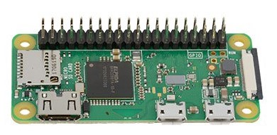

The LetterC uses a Raspberry Pi 0 W to host a web page that controls the display. The raspberry pi 0 w is a tiny single-board microcomputer that runs the linux operating system. The rpi0w has an on-board wifi chip that allows it to connect to a wireless LAN using your network name and network password.
The display is a string of 99 neopixels or WS2812 Integrated Light Sources. Each neopixel contains a red, green and blue LED integrated alongside a driver chip into a tiny surface-mount package controlled through a single wire. You can learn more about neopixels at: Learn about Neopixels